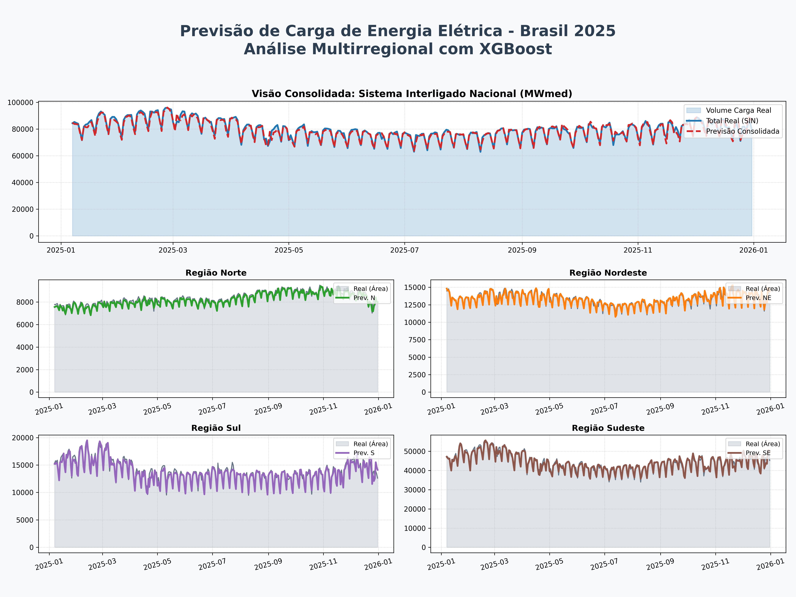
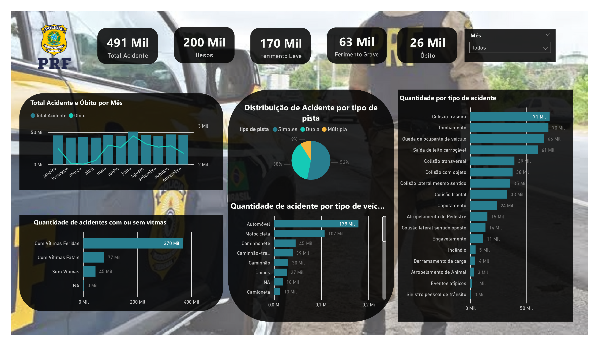
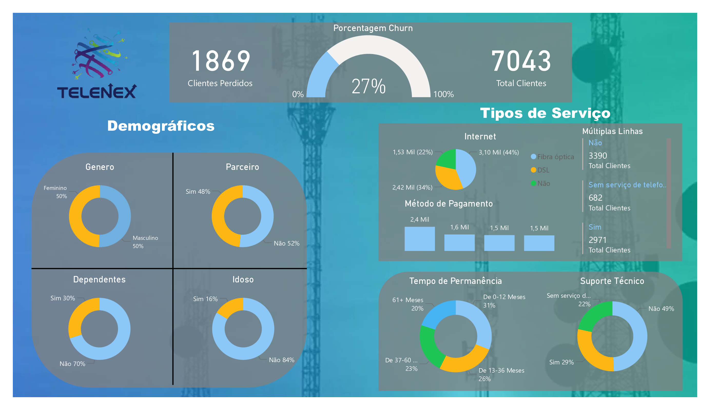
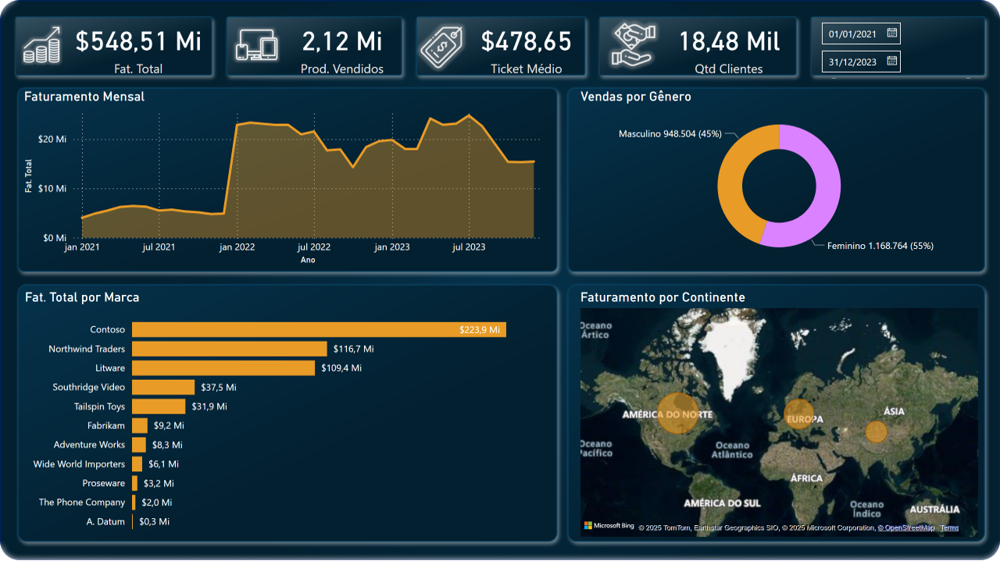

Transformando Dados em Decisões
Bem-vindo ao meu portfólio. Explore como utilizo dados, machine learning e visualização analítica para resolver problemas e apoiar decisões estratégicas.
Veja meus projetosSobre Mim
Sou um profissional de Tecnologia com foco em Dados, com experiência prática em análise de dados, machine learning e business intelligence. Desenvolvo projetos que integram Python, SQL e Power BI para transformar dados em insights estratégicos, com interesse especial em modelagem preditiva, séries temporais e visualização analítica.
Minhas Ferramentas
Projetos Recentes

Previsão de Carga de Energia por Região
Projeto de Machine Learning com XGBoost para prever a carga média diária dos subsistemas do SIN a partir de dados do ONS e INMET.
Ver detalhes →
Análise de Acidentes de Trânsito (PRF)
Análise de dados abertos da Polícia Rodoviária Federal em dashboard interativo.
Ver detalhes →
Análise de Churn
Estudo sobre a evasão de clientes utilizando SQL para consulta e Power BI para visualização.
Ver detalhes →
Análise de Vendas
Dashboard interativo no Power BI para análise de performance de vendas e KPIs.
Ver detalhes →
Preços de Imóveis
Análise preditiva e dashboard de preços de imóveis.
Ver detalhes →